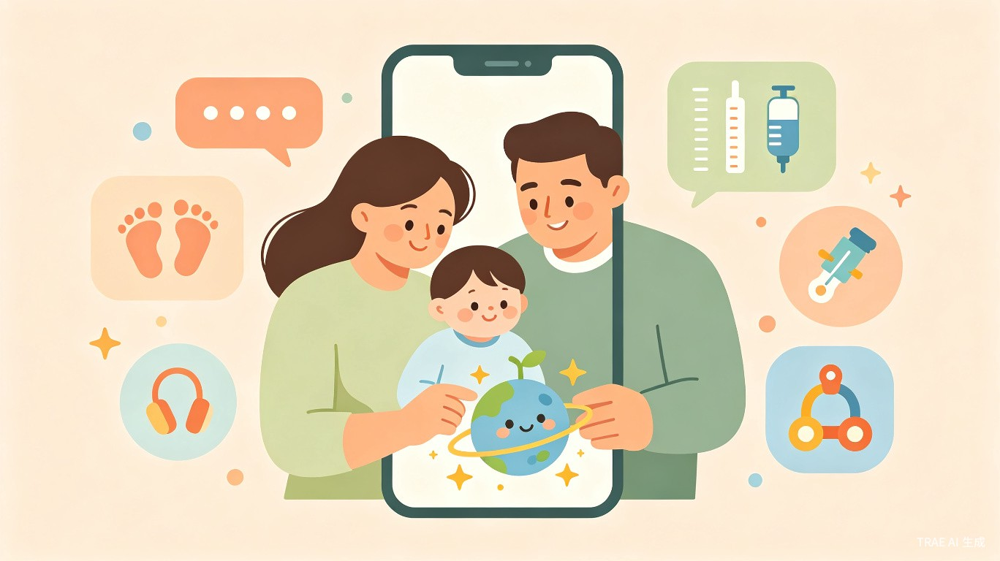
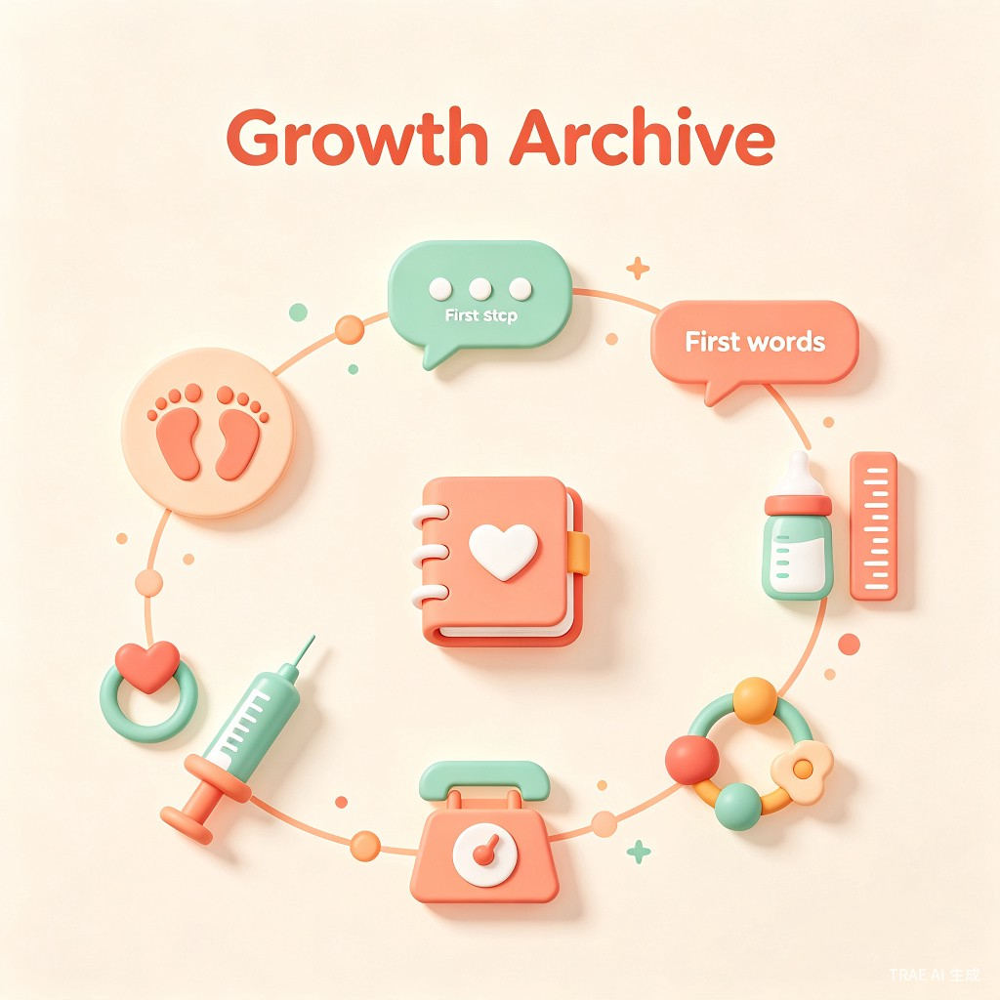
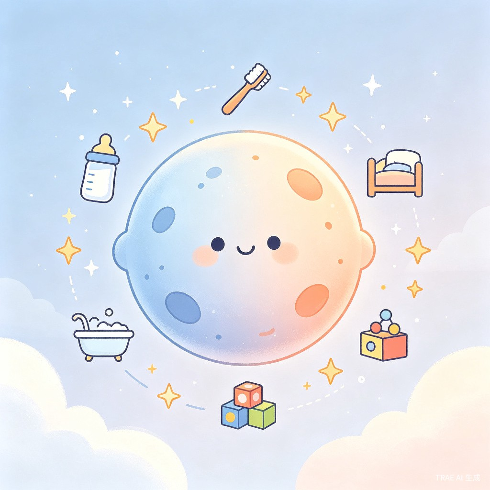
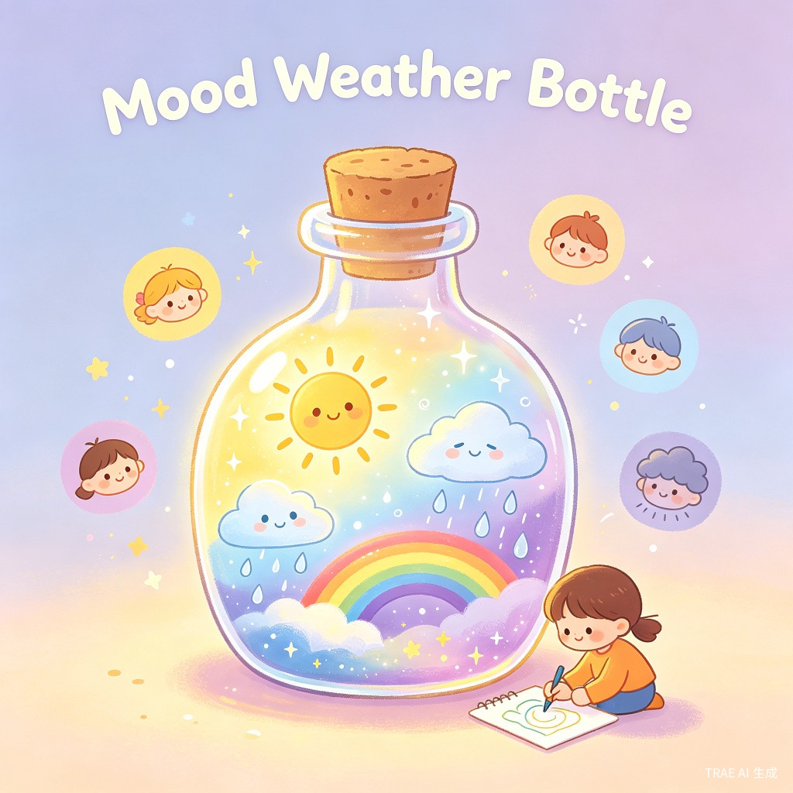

陪伴孩子成长的温馨App，记录每一个珍贵瞬间，培养良好习惯，理解情绪世界
创意方案展示现代父母在育儿过程中面临三大困境：成长记录碎片化（照片散落各处、里程碑难以系统整理）、习惯养成缺乏正向激励（容易变成枯燥的任务清单）、情绪表达门槛高（孩子难以准确描述自己的感受）。这些问题导致珍贵的成长记忆流失，亲子互动质量下降。
灵感来源于观察到身边年轻父母的真实痛点——他们想给孩子留下完整的成长档案，却被忙碌的生活打断；想培养孩子好习惯，却不知如何正向引导；想理解孩子的情绪，却发现孩子"说不清楚"。同时，注意到市面上缺乏一个真正以"陪伴"为核心、能随孩子成长而演变的亲子产品。
一款移动App，以"成长档案"为数据中枢，整合"成长小星球"习惯养成和"心情天气瓶"情绪认知两大模块，设计独特的亲子协作模式，让孩子从被动接受者逐步成长为主动参与者。
核心用户群体为0-12岁孩子的父母，特别是注重孩子全面发展、愿意投入时间进行高质量亲子陪伴的年轻家庭。次要用户为孩子本人（随着年龄增长逐步成为独立使用者）。
| 使用场景 | 当前痛点 |
|---|---|
| 记录宝宝第一次走路、说话等里程碑时刻 | 照片视频散落手机相册、微信朋友圈，缺乏系统整理，难以形成完整成长故事 |
| 培养孩子刷牙、按时睡觉等日常习惯 | 习惯养成变成"任务考核"，孩子抗拒，父母焦虑，缺乏正向激励和成就感 |
| 理解孩子今天为什么不开心、烦躁 | 孩子表达能力有限，"说不清楚"，父母只能猜测，情绪问题得不到及时关注 |
| 回顾孩子成长历程，与孩子一起回忆 | 零散记录难以串联成有意义的故事，亲子共同回忆的素材匮乏 |

一切数据的"根"，其他模块内容汇入这里。记录宝宝走路、说话、辅食、身高体重、疫苗等成长里程碑。

用"慢慢长大的星球"作为习惯养成可视化隐喻。完成日常作息获得奖励，积累成长感而非KPI考核。

用天气隐喻情绪，降低表达门槛。晴天、多云、小雨、雷阵雨、彩虹，让孩子轻松说出"今天的心情"。
作为App的数据中枢，成长档案系统性地记录孩子的每一个重要时刻。从第一次翻身、第一次走路、第一颗牙齿，到身高体重变化、疫苗接种记录，所有成长里程碑都被完整保存。
用一个可爱的小星球作为习惯养成的可视化隐喻。每次完成日常作息任务（喝奶、刷牙、睡觉、洗澡、整理），星球就会"长大一点点"，获得一颗星星或一朵小花。
用天气来隐喻情绪，让孩子用熟悉的概念表达复杂的感受。"今天是晴天"代表开心，"小雨"代表有点难过，"彩虹"代表虽然不开心但已经好转了。
"重点是积累感和成长感，不是KPI考核"
—— 产品设计核心理念0-3岁，父母负责所有记录和设置，孩子是被动接受者
4-8岁，父母引导，孩子参与选择和记录，共同完成任务
9-12岁，孩子独立操作，父母转为观察者和支持者
通过系统性的成长记录和正向激励的习惯养成，帮助父母建立高质量的亲子陪伴模式。情绪认知模块让孩子学会表达和理解情绪，培养健康的情感表达能力，为未来的人际交往奠定基础。完整的成长档案成为家庭珍贵的情感资产，增强家庭凝聚力。
当前亲子App市场以工具类（如疫苗接种提醒）或内容类（如育儿知识）为主，缺乏真正整合记录、习惯、情绪的综合解决方案。童伴星球以"陪伴"为核心定位，差异化明显。用户生命周期长（0-12岁覆盖），付费意愿强（年轻父母群体），具备订阅制、增值服务等多元盈利模式潜力。
童伴星球是一款以"陪伴"为核心的亲子成长App，通过成长档案系统记录孩子成长历程，成长小星球用可视化隐喻培养良好习惯，心情天气瓶降低情绪表达门槛。独特的亲子协作演变模式让孩子从被动接受者逐步成长为主动参与者，真正实现"陪伴孩子成长"的产品初心。
产品定位：温馨、正向、成长导向，而非考核、焦虑、任务驱动。核心理念：只奖励做到，不惩罚没做到，重点是积累感和成长感。